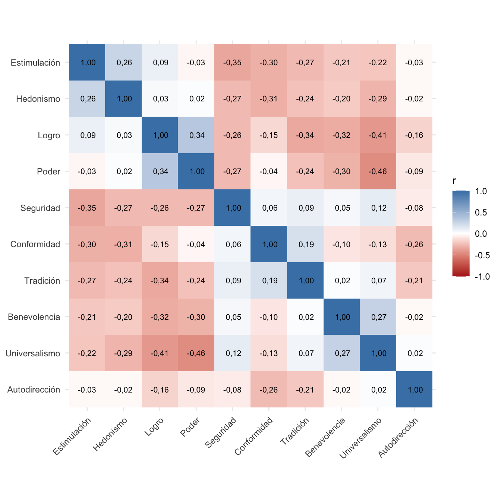
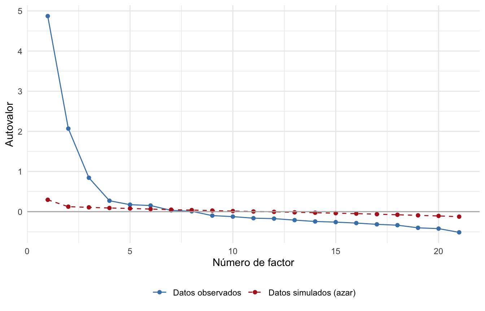

load("input/data/completas-280125.RData") # carga el objeto `data`
items <- paste0("values_", sprintf("%02d", 1:21))Análisis factorial del PVQ-21 de Schwartz en EDUMERCO Adultos
Informe
1 Presentación y Objetivos
Este informe presenta el análisis factorial de la escala de valores de Schwartz (PVQ-21) utilizando los datos del estudio EDUMERCO Adultos.
1.1 Modelo de valores de Schwartz
Schwartz plantea que las personas comparten diez valores básicos, organizados en una estructura circular:
- Los valores vecinos son compatibles entre sí.
- Los valores opuestos se encuentran en mayor tensión.
- Los diez valores se agrupan en cuatro dimensiones de orden superior: apertura al cambio, autoensalzamiento, conservación y autotrascendencia.
| Valor | Ítems del PVQ-21 | Dimensión |
|---|---|---|
| Estimulación | 06, 15 | Apertura al cambio |
| Hedonismo | 10, 21 | Apertura al cambio / autoensalzamiento |
| Logro | 04, 13 | Autoensalzamiento |
| Poder | 02, 17 | Autoensalzamiento |
| Seguridad | 05, 14 | Conservación |
| Conformidad | 07, 16 | Conservación |
| Tradición | 09, 20 | Conservación |
| Benevolencia | 12, 18 | Autotrascendencia |
| Universalismo | 03, 08, 19 | Autotrascendencia |
| Autodirección | 01, 11 | Apertura al cambio |
El PVQ-21 aplicado en EDUMERCO es una versión corta, con dos ítems por valor y tres para universalismo (Xie, 2017).
2 Preparación de los datos
2.1 Carga de los datos
Se cargan los datos de EDUMERCO Adultos y se seleccionan los 21 ítems del PVQ-21 (values_01 a values_21).
2.2 Recodificación de datos perdidos
Las respuestas 7 (“No sé”) y 8 (“Preferiría no responder”) se recodifican como NA.
vals <- data %>%
select(all_of(items)) %>%
mutate(across(everything(), as.numeric),
across(everything(), ~ na_if(na_if(.x, 7), 8)))2.3 Selección de casos
Se conservan las personas que respondieron al menos 15 de los 21 ítems.
n_total <- nrow(vals)
vals <- vals %>% filter(rowSums(!is.na(.)) >= 15)
n_usados <- nrow(vals)Se utilizan 3.357 de 3.484 personas (96,4%).
2.4 Definición de los valores
Cada valor de Schwartz se define como el conjunto de ítems que lo miden, en el orden del círculo teórico.
valores10 <- list(
estimulacion = c("06", "15"), hedonismo = c("10", "21"),
logro = c("04", "13"), poder = c("02", "17"),
seguridad = c("05", "14"), conformidad = c("07", "16"),
tradicion = c("09", "20"), benevolencia = c("12", "18"),
universalismo = c("03", "08", "19"), autodireccion = c("01", "11")
)
nombres <- c(estimulacion = "Estimulación", hedonismo = "Hedonismo",
logro = "Logro", poder = "Poder", seguridad = "Seguridad",
conformidad = "Conformidad", tradicion = "Tradición",
benevolencia = "Benevolencia", universalismo = "Universalismo",
autodireccion = "Autodirección")2.5 Versión centrada de las respuestas
Se construye además una versión centrada, restando a cada respuesta el promedio de la persona, para considerar la importancia relativa de los valores.
vals_c <- vals - rowMeans(vals, na.rm = TRUE)3 Estadísticos descriptivos
3.1 Por ítem
descriptivos <- psych::describe(vals)
descriptivos %>%
select(n, mean, sd, min, max, skew, kurtosis) %>%
mutate(across(where(is.numeric), ~ round(.x, 2))) %>%
kbl(
col.names = c("N", "Media", "DE", "Mín.", "Máx.", "Asimetría", "Curtosis"),
format.args = list(big.mark = ".", decimal.mark = ",")
) %>%
kable_styling(full_width = FALSE)| N | Media | DE | Mín. | Máx. | Asimetría | Curtosis | |
|---|---|---|---|---|---|---|---|
| values_01 | 3.318 | 3,87 | 1,24 | 1 | 6 | -0,09 | -0,55 |
| values_02 | 3.335 | 2,44 | 1,26 | 1 | 6 | 0,96 | 0,40 |
| values_03 | 3.342 | 4,81 | 1,19 | 1 | 6 | -0,93 | 0,19 |
| values_04 | 3.317 | 2,95 | 1,38 | 1 | 6 | 0,50 | -0,63 |
| values_05 | 3.334 | 4,78 | 1,23 | 1 | 6 | -0,88 | 0,02 |
| values_06 | 3.332 | 3,88 | 1,38 | 1 | 6 | -0,09 | -0,90 |
| values_07 | 3.289 | 3,55 | 1,49 | 1 | 6 | -0,01 | -1,04 |
| values_08 | 3.339 | 4,32 | 1,21 | 1 | 6 | -0,48 | -0,35 |
| values_09 | 3.334 | 4,55 | 1,23 | 1 | 6 | -0,61 | -0,35 |
| values_10 | 3.329 | 3,74 | 1,36 | 1 | 6 | -0,07 | -0,84 |
| values_11 | 3.336 | 4,55 | 1,26 | 1 | 6 | -0,60 | -0,44 |
| values_12 | 3.336 | 4,70 | 1,15 | 1 | 6 | -0,66 | -0,28 |
| values_13 | 3.317 | 3,25 | 1,42 | 1 | 6 | 0,34 | -0,84 |
| values_14 | 3.308 | 4,77 | 1,33 | 1 | 6 | -0,97 | 0,10 |
| values_15 | 3.330 | 3,11 | 1,39 | 1 | 6 | 0,38 | -0,70 |
| values_16 | 3.312 | 4,09 | 1,35 | 1 | 6 | -0,26 | -0,84 |
| values_17 | 3.298 | 3,35 | 1,41 | 1 | 6 | 0,26 | -0,89 |
| values_18 | 3.329 | 4,62 | 1,21 | 1 | 6 | -0,69 | -0,14 |
| values_19 | 3.331 | 4,76 | 1,21 | 1 | 6 | -0,78 | -0,12 |
| values_20 | 3.310 | 3,68 | 1,53 | 1 | 6 | -0,11 | -1,04 |
| values_21 | 3.310 | 3,59 | 1,39 | 1 | 6 | 0,07 | -0,87 |
3.2 Por valor
tabla_valores <- purrr::map_dfr(
names(valores10),
function(v) {
vars <- paste0("values_", valores10[[v]])
tibble(
valor = nombres[v],
puntaje = rowMeans(vals[, vars], na.rm = TRUE)
)
}
)
resumen_valores <- tabla_valores %>%
group_by(valor) %>%
summarise(
n = sum(!is.na(puntaje)),
promedio = mean(puntaje, na.rm = TRUE),
de = sd(puntaje, na.rm = TRUE),
.groups = "drop"
) %>%
arrange(desc(promedio))
resumen_valores %>%
mutate(across(c(promedio, de), ~ round(.x, 2))) %>%
kbl(
col.names = c("Valor", "N", "Media", "DE"),
align = "lrrr",
format.args = list(big.mark = ".", decimal.mark = ",")
) %>%
kable_styling(bootstrap_options = c("striped", "hover"), full_width = FALSE)| Valor | N | Media | DE |
|---|---|---|---|
| Seguridad | 3.354 | 4,77 | 1,08 |
| Benevolencia | 3.352 | 4,66 | 1,00 |
| Universalismo | 3.357 | 4,63 | 0,91 |
| Autodirección | 3.356 | 4,21 | 1,03 |
| Tradición | 3.355 | 4,12 | 1,06 |
| Conformidad | 3.348 | 3,82 | 1,17 |
| Hedonismo | 3.353 | 3,67 | 1,20 |
| Estimulación | 3.353 | 3,50 | 1,19 |
| Logro | 3.349 | 3,10 | 1,25 |
| Poder | 3.355 | 2,90 | 1,08 |
4 Relación entre los valores
Para esto se usan los puntajes centrados (cada respuesta menos el promedio de la persona), que es la corrección que recomienda Schwartz. Al centrar aparecen correlaciones negativas por construcción, así que es una exploración y no una prueba de la estructura circular.
scores <- map_dfc(valores10,
~ rowMeans(vals_c[, paste0("values_", .x)], na.rm = TRUE))
R <- cor(scores, use = "pairwise.complete.obs")
orden <- names(valores10)
as.data.frame(as.table(R)) %>%
mutate(Var1 = factor(nombres[as.character(Var1)], levels = nombres[orden]),
Var2 = factor(nombres[as.character(Var2)], levels = rev(nombres[orden]))) %>%
ggplot(aes(Var1, Var2, fill = Freq)) +
geom_tile() +
geom_text(aes(label = format(round(Freq, 2), decimal.mark = ",")), size = 2.8) +
scale_fill_gradient2(low = "firebrick", mid = "white", high = "steelblue",
limits = c(-1, 1)) +
labs(x = NULL, y = NULL, fill = "r") +
coord_fixed() +
theme_minimal() +
theme(axis.text.x = element_text(angle = 45, hjust = 1))
Varios valores vecinos correlacionan positivamente (poder–logro, 0,34; benevolencia–universalismo, 0,27; estimulación–hedonismo, 0,26; conformidad–tradición, 0,19) y algunos opuestos correlacionan negativamente (poder–universalismo, −0,46; logro–universalismo, −0,41; estimulación–seguridad, −0,35). Autodirección tiene correlaciones cercanas a cero con casi todos los valores, y seguridad se asocia poco con conformidad y tradición.
5 Análisis factorial exploratorio
5.1 Adecuación de los datos (KMO y Bartlett)
cor_poly <- psych::polychoric(vals)
kmo <- KMO(cor_poly$rho)
bart <- cortest.bartlett(cor_poly$rho, n = nrow(vals))El índice KMO global fue de 0,88, y la prueba de Bartlett fue significativa (χ²(210) = 22.614,3, p < 0,001), por lo que los datos son adecuados para un análisis factorial.
5.2 Número de factores
pa <- fa.parallel(cor_poly$rho, n.obs = nrow(vals), fa = "fa", fm = "minres",
plot = FALSE)tibble(factor = seq_along(pa$fa.values),
`Datos observados` = pa$fa.values,
`Datos simulados (azar)` = pa$fa.sim) %>%
pivot_longer(-factor, names_to = "serie", values_to = "autovalor") %>%
ggplot(aes(factor, autovalor, color = serie, linetype = serie)) +
geom_line() +
geom_point() +
geom_hline(yintercept = 0, color = "grey70") +
scale_color_manual(values = c("Datos observados" = "steelblue",
"Datos simulados (azar)" = "firebrick")) +
scale_linetype_manual(values = c("Datos observados" = "solid",
"Datos simulados (azar)" = "dashed")) +
labs(x = "Número de factor", y = "Autovalor", color = NULL, linetype = NULL) +
theme_minimal() +
theme(legend.position = "bottom")
La línea azul son los datos y la roja punteada lo esperable por azar, se consideran los factores donde la azul queda por encima.
El análisis paralelo sugiere 6 factores.
6 Referencias
Xie, Y. (2017). bookdown: Authoring Books and Technical Documents with R Markdown. Chapman; Hall/CRC.